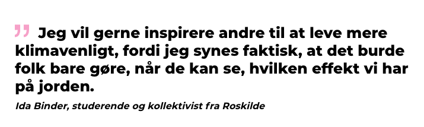
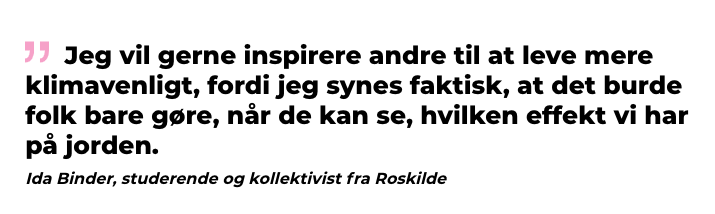

Grundlæggende UX
I 03 grundlæggende UX, har jeg fået teori, metoder og en række redskaber til at skabe den bedste brugeroplevelse.
Research og idé
Den første del af temaet var primære fokus at få en forståelse for emnets teori. Her blev det klart, at der skal arbejdes på tværs af en række discipliner, for at komme i mål med en god brugeroplevelse. Til det fik jeg en række metoder til at lave research, her var målet at forstå brugeren. Deres adfærd (user behaviors), deres behov (user needs) og deres motivation (users motivations). Til denne process kunne der gøres brug af en række researchmetoder; desk research, interviews og observation. Derfor blev der både gjort brug af kvalitativ og kvantitativ data.
Da der var indsamlet tilstrækkeligt data, begyndte idefasen. Her udvikles ideer for at løse brugerens behov. Der skulle her findes et tema til min side. Det blev her klart, at det er vigtigt, at man ikke låser sig fast til et færdigt slutprodukt, for tidligt i processen, da det kan være hæmmende for resultatet af brugeroplevelsen. Jeg fik her en række redskaber til at tænke divergent og konvergent, blandt andet ved hjælp af “Dobbelt diamond-modellen”. Der blev lavet noter, skitser, designssprints og lofi-løsninger. Til sidst havde jeg en klar ide til mit tema.
 



Prototype
For at komme fra ide til færdig prototype skulle der udarbejdes en indholdsstrategi. Her anvendte de færdigheder og kompetencer, jeg fik ved 02 grundlæggende web. Ved hjælp af Adobe Xd fik jeg produceret en wireframe, der gav mig et overblik over hvilket content siden skulle indeholde, samt hvordan det skulle sættes op.
For at skabe indhold til siden, gjorde jeg brug af den teori jeg fik om, hvordan der kommunikeres og integreres bedst med brugeren, ved hjælp af copy -og microcopy writing. Derefter udarbejdede jeg en hifi-løsning. Ved hjælp af AI, UX og UI for at skabe et slutprodukt, der var så virkelighedsnært som muligt.
Test og pitch
Til sidst skulle prototypen testes. Her blev der gjort brug af en række test, herunder “tænke højt testen”/five act interview, som handler om at teste, om prototypen fungere i praksis. Når der var testet tilstrækkeligt nok, kunne jeg se hvilke komplikationer der var i forbindelse med brugeroplevelsen.
Derfor kunne jeg nu gå et step tilbage til min prototype, og bruge de indsigter jeg fik fra testfasen, til at justere siden, så brugerrejsen blev optimeret. Temaet sluttede af med at vi skulle pitche vores process, for at styrke vores evner til at pitche, præsentere og diskutere feedback, på et reflekterende niveau.
“Kan det virkelig være rigtigt, at man ikke kan købe en bæredygtig t-shirt, med mindre at den bare skal være hvid?”
Citat fra min pitch